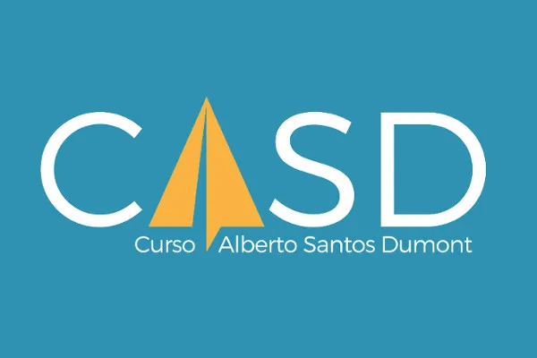

Projetos Acadêmicos

Do Amor à Ação: Tecnologia a Serviço do CASD
Após dois anos como aluno do CASD, desenvolvi como Trabalho de Conclusão de Curso um sistema de gestão voltado para automatizar o controle de livros, doações financeiras e equipamentos destinados aos alunos.
O projeto substitui processos manuais e planilhas dispersas, trazendo maior organização, rastreabilidade e eficiência para uma instituição que transforma vidas através do voluntariado.

BANMOA — Projeto Cultural e Musical
Participei da Banda Marcial Moacyr Benedicto de Souza, uma iniciativa voltada à formação musical e cultural de jovens.
Ingressei no projeto no 8º ano, iniciando no trompete e participando de ensaios, apresentações e atividades musicais que exigiam disciplina, cooperação e dedicação coletiva.